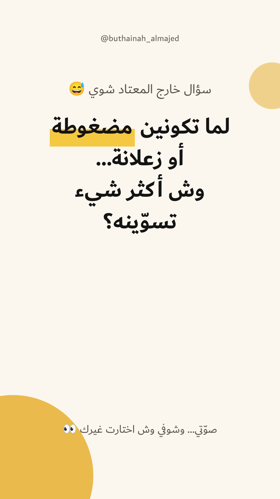
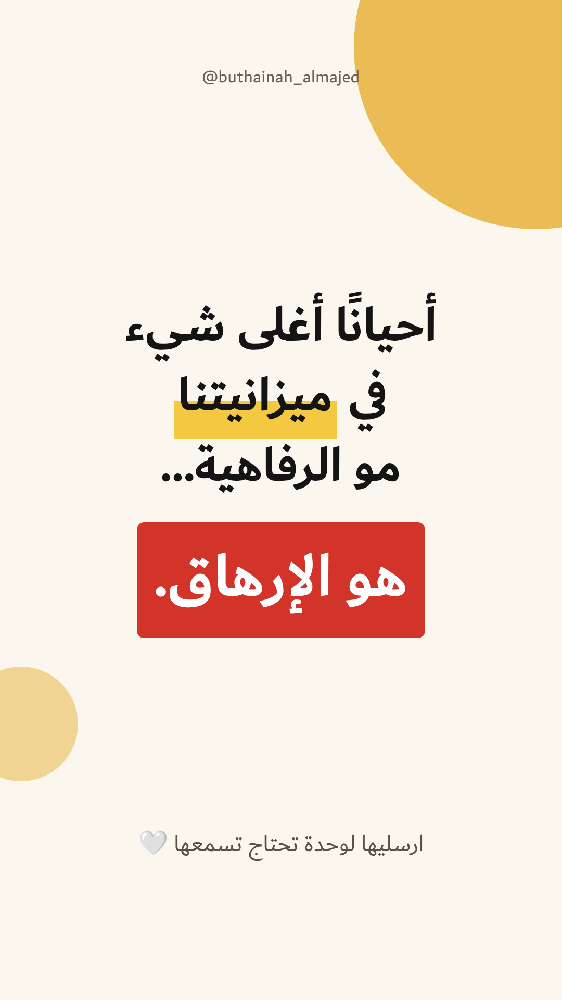

ستوري اليوم ✨
الخميس ١٢ نوفمبر · يوم تجربة · ٣ ستوريات، دقيقتان لكل واحد
الصباح · تنشرينه أنتِ
ستوري التصويت

احفظي الصورة
- افتحي إنستجرام ← ستوري ← اختاري الصورة.
- اضغطي الملصقات ← تصويت (Poll)، وحطيه في المساحة الفاضية تحت السؤال.
- انسخي الخيارات من تحت والصقيها:
أنام
آكل
أطلع
أشتري
التصويت يقبل حتى ٤ خيارات. إذا ما ظهر الخيار الرابع، اضغطي «إضافة خيار».
الظهر · لاحقًا ينزل تلقائيًا
ستوري الظهر

هذا النوع بعد ربط إنستجرام بأداة الجدولة أجدوله أنا، وينزل لحاله. بكرة الربط ما اكتمل، فاحفظيه وانشريه الظهر كما هو، بدون أي ملصق.
احفظي الصورة
المساء · تنشرينه أنتِ
نتيجة التصويت
- افتحي الستوري حق الصباح ← اضغطي «النشاط» أو «المشاهدات».
- اضغطي سهم المشاركة جنب النتيجة ← «مشاركة في القصة».
- انسخي الجملة والصقيها فوق النتيجة:
شفتوا؟ 😂 اللي اختاروا «أشتري»… أنتم سبب موضوع بكرة